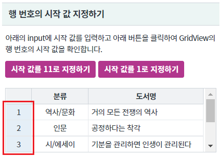
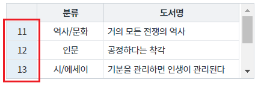
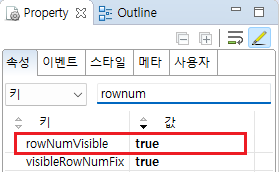

GridView의 행 번호의 시작 값을 지정하는 예제입니다. 이 기능은 함수 setStartRowNumber을 호출하여 사용할 수 있습니다.
행 번호의 시작 값 지정하기
영역 [행 번호의 시작 값 설정하기]의 GridView의 행 번호 시작 값을 확인합니다.
[브라우저(Chrome) 실행 예시 - 초기 값]

버튼 시작 값를 11로 지정하기을 클릭합니다.
GridView의 행 번호 시작 값이 11로 변경됩니다.
[브라우저(Chrome) 실행 예시]

STEP1. GridView의 속성을 정의합니다.
[필수] rowNumVisible="true" //[default:false, true] 행 번호 표시 여부
그림 1.웹스퀘어5 SP5 스튜디오의 Property View(속성창) 예시

[소스 코드 예시]
<!-- gridView 의 소스 본문 예시 --> <w2:gridView rowNumVisible="true" dataList="data:dlt_books_1" style="height: 100px;"> <!-- 중략 --> </w2:gridView>
GridView의 함수 setStartRowNumber을 사용합니다.
[소스 코드 예시]
//예제 파일의 스크립트 "scwin.btn_ex1_onclick"를 참고하세요. //GridView [grd_exam1]의 행 번호 시작 값을 11로 지정합니다. grd_exam1.setStartRowNumber(10);
rowNumVisible
setStartRowNumber( rowIndex )
[웹스퀘어5 SP5 개발 가이드] GridView
링크 : https://docs1.inswave.com/sp5_user_guide/bc10c1b82c9a2a0b#e1c4658baf7e726f